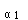
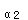

A.在脑中生成
B.通过鸟氨酸循环途径生成
C.通过三羧酸循环途径生成
D.生成反应由CTP供能
E.关键酶是精氨酸酶
参考答案：B
题目解析：体内氨的主要代谢去路是用于合成尿素。合成尿素的主要器官是肝脏，尿素合成的特点：①合成主要在肝脏的线粒体和胞液中进行；②合成1分子尿素需消耗3分子ATP（4分子高能磷酸键）；③精氨酸代琥珀酸合成酶是尿素合成的关键酶；④尿素分子中的2个氮原子，一个来源于NH，一个来源于天冬氨酸。
A.尿素
B.β-氨基异丁酸
C.β-丙氨酸
D.NH
E.尿酸
参考答案：E
题目解析：在嘌呤核苷酸的分解代谢中，首先在各种脱氨酶作用下水解脱去氨基，腺嘌呤脱氨生成次黄嘌呤（Ⅰ），鸟嘌呤脱氨生成黄嘌呤(Ⅹ)，Ⅰ和Ⅹ在黄嘌呤氧化酶作用下氧化生成尿酸。E正确。
A.谷氨酸
B.色氨酸
C.苏氨酸
D.天冬氨酸
E.甲硫氨酸
参考答案：A
题目解析：γ-氨基丁酸(GABA)由谷氨酸脱羧基生成，催化的酶是谷氨酸脱羧酶，脑、肾组织中活性很高，所以脑中GABA含量较高，故选A。
A.磷酸吡哆醛
B.焦磷酸硫胺素
C.生物素
D.四氢叶酸
E.泛酸
题目解析：磷酸吡哆醛和磷酸吡哆胺都是维生素B在体内的活性形式，即转氨酶类、脱羧酶类、半胱氨酸脱硫酶等的辅酶，对蛋白质或氨基酸的代谢起十分重要的作用。在临床上主要用于皮肤科疾病，A正确。
A.由CO和C-COOH组成
B.由C和C组成
C.由Cα和N组成
D.肽键有一定程度双键性质
E.肽键可以自由旋转
参考答案：D
题目解析：肽键为一分子氨基酸的α-羧基和一分子氨基酸的α-氨基脱水缩合形成的酰胺键，即-CO-NH-，是蛋白质分子中的主要共价键，性质稳定，虽是单键，但具有部分双键的性质，难以自由旋转，形成肽键平面，D选项正确。
A.苯丙氨酸
B.甲硫氨酸
C.组氨酸
D.赖氨酸
E.亮氨酸
题目解析：酪氨酸，即α-氨基-β-苯基丙酸，属非必需氨基酸，可以在肝内被合成，也可少量在脑内由苯丙氨酸分解而来，A正确。
A.嘌呤核苷酸循环
B.加水脱氨基作用
C.氨基移换作用
D.D-氨基酸氧化脱氨基作用
E.L-谷氨酸氧化脱氨基作用
题目解析：骨骼肌和心肌组织中L-谷氨酸脱氢酶的活性很低，不能通过L-谷氨酸脱氢酶和转氨酶的联合脱氨基作用脱氨。但是含有丰富的腺苷酸脱氨酶，能催化腺苷酸加水、脱氨生成次黄嘌呤核苷酸(IMP)。这个过程叫做嘌呤核苷酸循环，为肌肉中最主要的脱氨基方式。A正确，故选A。
A.线粒体和微粒体
B.胞质和线粒体
C.胞质和微粒体
D.微粒体和高尔基体
E.胞质和高尔基体
题目解析：尿素循环亦称鸟氨酸循环，其中一个步骤，在肝细胞胞质中的氨基酸经转氨作用与α-酮戊二酸形成谷氨酸，透过线粒体膜进入线粒体基质，在谷氨酸脱氢酶作用下脱氨形成游离氨，B正确。
B.胺
C.乳酸
D.肌酸
E.氨
题目解析：尿素是氨基酸的代谢终产物。
A.心
B.肝
C.骨骼肌
D.肾
E.脾
题目解析：谷草转氨酶(AST)，谷丙转氨酶(ALT)，在体内广泛存在，活性最高的组织分别是心、肝。
题目解析：ALT在体内广泛存在，活性最高的组织分别是心、肝。
A.维生素B
B.维生素B
C.维生素B
D.维生素B
E.维生素B
参考答案：C
题目解析：催化反应的转氨酶是谷丙转氨酶，其辅酶是维生素B，即磷酸吡哆醛。
A.维生素B、维生素B
B.维生素B、维生素B
C.维生素B、维生素B
D.维生素B、维生素PP
E.维生素B、维生素PP
题目解析：催化联合脱氨基作用所需的酶是转氨酶和L-谷氨酸脱氢酶。转氨酶的辅酶是维生素B；L-谷氨酸脱氢酶的辅酶是NAD或NADP（维生素PP）。联合脱氨基作用是指氨基酸先与α-酮戊二酸进行转氨基作用，生成相应的α-酮酸及谷氨酸，然后谷氨酸在L-谷氨酸脱氢酶作用下，脱去氨基生成原来的α-酮戊二酸并释放出氨。
A.氧化脱氨
B.转氨基
C.非联合脱氨基
D.非氧化脱氨
E.联合脱氨基
题目解析：联合脱氨基作用是体内主要的脱氨基途径。
A.吡哆醛（吡哆胺）
B.泛酸
C.尼克酸
D.核黄素
E.吡哆酸
题目解析：各种转氨酶均以磷酸吡哆醛或磷酸吡哆胺为辅酶，它在反应过程中起传递氨基的作用。
A.甘氨酸
C.丝氨酸
D.组氨酸
E.谷氨酸
题目解析：各种转氨酶中，以L-谷氨酸与α-酮酸的转氨酶最为重要，如ALT，AST。体内存在各种转氨酶，不同氨基酸与α-酮酸之间的转氨基作用只能由专一的转氨酶催化。
A.氨基酸与糖代谢的枢纽
B.非必需氨基酸的合成途径
C.肌肉中的氨以无毒形式运输到肝的途径
D.脑中的氨以无毒形式运输到肝的途径
E.以上均正确
题目解析：丙氨酸-葡萄糖循环，其生理意义在于使肌肉中的氨以无毒的丙氨酸形式运送至肝。肌肉中的氨基酸经转氨基作用将氨基转给丙酮酸生成丙氨酸；丙氨酸经血液运送到肝。在肝中，丙氨酸通过联合脱氨基作用，释放出氨，用于尿素合成。转氨基后生成的丙酮酸经糖异生途径生成葡萄糖。葡萄糖经血液输送到肌肉组织，分解为丙酮酸，后者接受氨基生成丙氨酸。形成丙氨酸-葡萄糖循环。
A.肝是合成尿素的主要器官
B.尿素分子中的2个N，1个来自氨，1个来自天冬氨酸
C.每合成1分子尿素，消耗3个高能磷酸键
D.尿素合成不可逆
E.每合成1分子尿素，消耗4个高能磷酸键
题目解析：每合成1分子尿素，消耗3个ATP，4个高能磷酸键。
A.琥珀酸脱氢酶
B.谷氨酰胺酶
C.天冬氨酸转氢酶
D.L-谷氨酸脱氢酶
E.乳酸脱氢酶
题目解析： 乳酸在乳酸脱氢酶的催化作用下生成丙酮酸，该反应为可逆反应。谷氨酸在L-谷氨酸脱氢酶的催化作用下参与氧化脱氨基作用。
A.乙酰乙酸
B.草酰乙酸
C.α-酮戊二酸
D.丙酮酸
E.丙二酸
题目解析： α-酮戊二酸可以通过转氨酶催化生成谷氨酸，该反应为可逆反应；酮体是脂肪酸在肝细胞分解氧化时产生的特有的中间代谢物，包括乙酰乙酸、β-羟丁酸及丙酮。
A.合成尿素
B.合成丙氨酸
C.合成非必需氨基酸
D.合成谷氨酰胺
E.合成必需氨基酸
题目解析： 体内氨的主要代谢去路是合成尿素。脑中氨的主要代谢去路是合成谷氨酰胺。肌肉中氨的主要代谢去路是合成丙氨酸。
微信关注